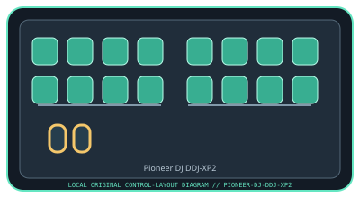

[ SPECIALIZED INPUT CONTROLLERS // IDENTIFIED COMPONENT ]
Pioneer DJ DDJ-XP2
USB performance controller adding pad, effects, and transport manipulation to compatible DJ software.

MODEL IDENTIFICATION: DDJ-XP2. Confirm the full label, revision, region, included accessories, and software generation against the physical unit before use.
Model specifications
| Catalog leaf | Specialized input controllers |
|---|---|
| Exact model / identifier | DDJ-XP2 |
| Control inputs / sensors | Two banks of eight RGB performance pads (16 physical pads, assignable across decks), two touch strips, effect/parameter buttons, and deck/transport controls. Pads and buttons are discrete/velocity-aware controls; the touch strips report position. |
| Connection / protocol | USB Type-B to computer and USB bus power; USB control/MIDI integration with supported rekordbox and Serato DJ Pro versions. It has no standalone audio output or mixer; audio routing remains with the host/software and attached DJ equipment. |
| Driver, software, and host compatibility | Official integrations are with rekordbox and Serato DJ Pro; supported features and host OS versions depend on each application release. Check Pioneer DJ’s compatibility and software pages before purchase or installation; do not infer compatibility from USB connection alone. |
| Setup / calibration | Install a supported rekordbox or Serato DJ Pro version, connect directly over USB, and select DDJ-XP2 in the application. Choose deck and pad modes, then test both pad banks and touch strips at low volume before performance. Follow the current user guide for firmware and software settings; no analog calibration is required. |
Safety and preservation
Use on a stable table with cable clearance; keep liquids away from pads and connectors. Do not strike pads with hard objects or force touch strips. Disconnect before cleaning, and never update firmware while power/USB is unstable.
Record observed condition, host OS, application/driver version, firmware, accessories, and test conditions separately from manufacturer claims.
Primary manufacturer sources
- Pioneer DJ DDJ-XP2 product specificationsManufacturer product overview and supported software features.
- Pioneer DJ DDJ-XP2 support and softwareManufacturer downloads, documents, and compatibility notices for this model.
Specifications and software support can change by revision and host OS. Verify the exact unit and applicable manual before service or deployment.